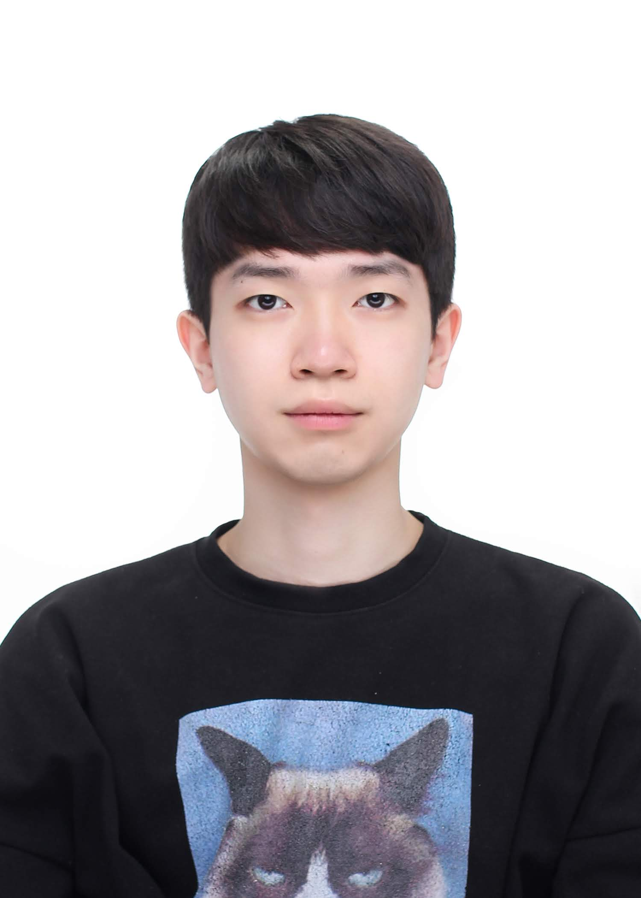
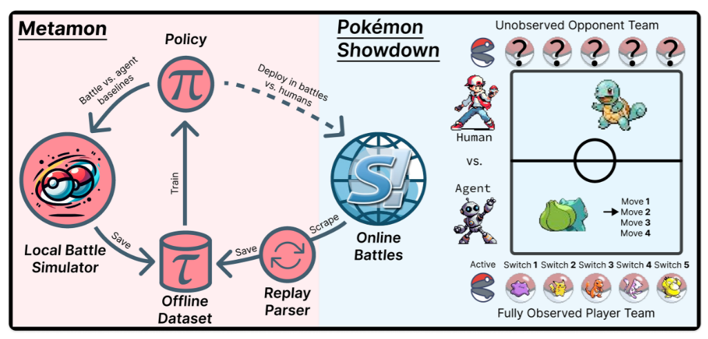
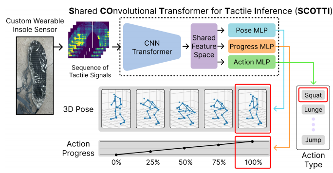
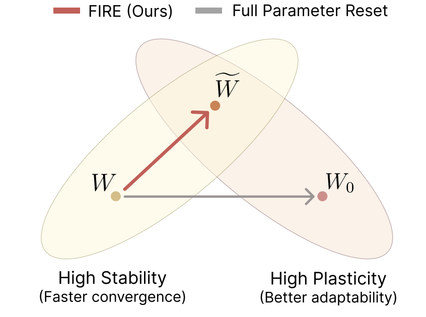
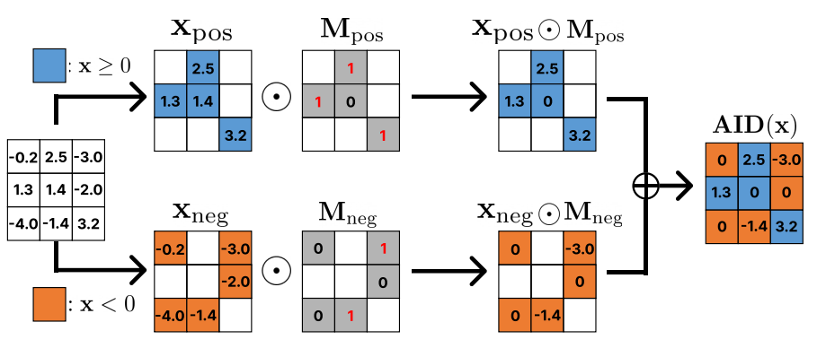
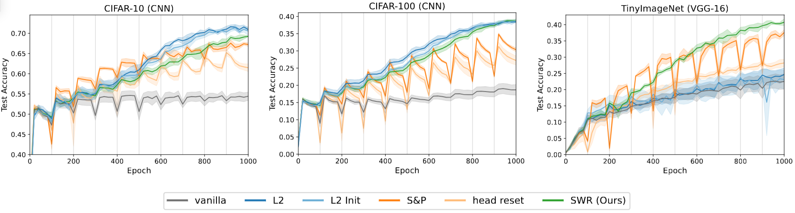
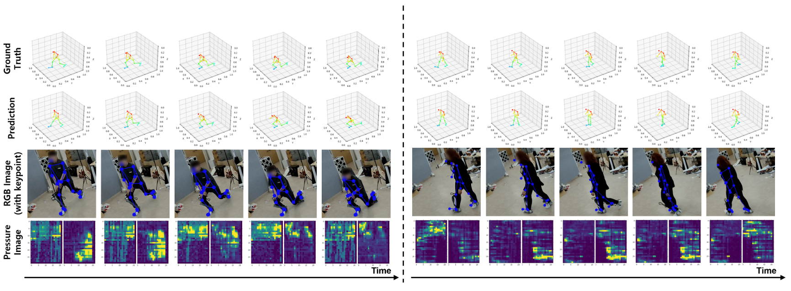

I completed my M.S. in AI at GIST, advised by Prof. Kyung-Joong Kim.
My research has focused on ‘Plasticity Loss’ — the phenomenon where a model’s adaptability degrades when learning new data distributions during training. I have conducted research from the perspectives of reinitialization (FIRE), activation functions (AID), and weight regularization (SWR), and implemented and validated evaluation code across various continual learning and reinforcement learning benchmarks.
Please feel free to reach out for research collaborations, career opportunities, or any other questions!







Template based on Isaac Han's website.